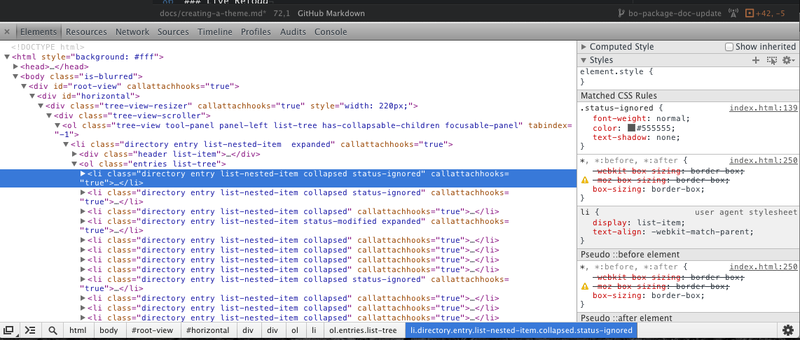
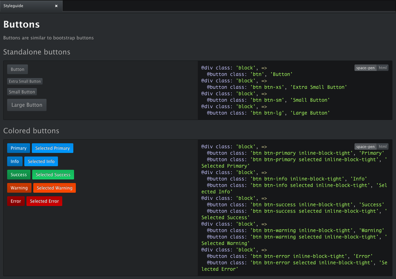

创建主题#
Atom的界面使用HTML渲染，并且通过Less来定义样式，它是CSS的超集。不要担心之前从未听说过Less，它类似于CSS，但是带有一些便捷的扩展。
Atom支持两种主题：UI和语法。UI主题为树视图、选择夹、下拉列表和状态栏之类的元素定义样式。语法主题为编辑器中的代码定义样式。
主题可以从设置视图安装和修改，你可以选择Atom > Preferences…菜单，然后在左侧的侧栏中选择“Install”和“Theme”部分来打开它。
开始#
主题是十分直截了当的，但是如果你在开始之前熟悉一些事情，会很有用处：
- Less是CSS的超集，但是它拥有一些像变量这样便利的特性。如果你并不熟悉它的语法，花几分钟在这里熟悉它。
- 你也可能想要复习一遍package.json的概念。这个文件帮助你把主题分布给其它用户。
- 你的主题中的“package.json”包必须含有一个
theme键，值为ui或者syntax，为了让Atom识别为主题。 - 你可以在atom.io上面找到现有的主题，或者建立它们的分支（fork）。
创建语法主题#
让我们来创建你的第一个主题。
按下cmd-shift-P来开始，并且输入“Generate Syntax Theme”就会一个新的主题包。选择“Generate Syntax Theme”之后，Atom会询问你要把主题新建在哪个目录下。我们把要创建的主题叫做“motif-syntax”。提示：语法主题应该以“-syntax”结尾。
然后Atom会弹出一个窗口展示motif-syntax主题，带有一些预先创建的文件和文件夹。如果你打开设置视图（cmd-,），并且访问左边的Themes部分，你会看到Syntax Theme下拉列表中列出了Motif。从菜单中选择它来加载。现在打开新的编辑器之后，你应该看到motif-syntax主题被激活了。
打开styles/colors.less来修改预先定义的各个颜色变量。例如，把@red变成#f4c2c1。
接着打开styles/base.less来修改预先定义的选择器。选择器为编辑器中不同部分定义样式，例如注释、字符串和侧栏中的行号。
例如，可以把.gutter``background-color设置为@red。
通过按下cmd-alt-ctrl-l重启Atom，来在Atom窗口中查看你的修改。这真是极好的。
提示：你可以通过在dev模式中打开新窗口，来避免查看你所做的修改时重启Atom。来命令行中运行atom --dev .来打开dev模式的Atom窗口。也可以按下cmd-shift-o或者打开View > Developer > Open in Dev Mode菜单来执行。当你编辑你的主题时，修改会立即表现出来。
建议不要在你的语法主题中指定font-family，因为会覆盖Atom设置中的Font Family字段。如果你仍旧想要推荐一款适合你主题的字体，我们推荐你在README文件中这么做。
创建界面主题#
界面主题必须提供ui-variables.less文件，它包含了核心主题提供的所有变量。这些在“主题变量”一节会提到。
执行以下步骤来创建UI主题：
- 创建以下仓库之一的分支：
- atom-dark-ui
- atom-light-ui
- 克隆分支到本地文件系统
- 在主题的目录中打开命令行
- 在命令行中通过运行
atom --dev .，或者点击View > Developer > Open in Dev Mode菜单，以dev模式打开你的新主题 - 在主题的
package.json文件中修改主题的名字 - 以
-ui结尾的名字命名你的主题，例如super-white-ui - 运行
apm link来把你的主题符号链接到~/.atom/packages - 使用
cmd-alt-ctrl-L重启Atom - 通过设置视图的Themes部分中的UI Theme下拉列表来开启主题
- 做一些修改。由于你在dev模式窗口下打开主题，修改会立即在编辑器中反映，并不需要重启。
开发的工作流#
下面是一些使主题开发更快速更简单的工具。
即时重启#
在你修改你的主题之后，按下cmd-alt-ctrl-L来重启不是十分理想。在dev模式的Atom窗口下，Atom支持样式的即时更新。
要想开启dev模式的窗口：
- 通过选择
View > Developer > Open in Dev Mode菜单，或者按下cmd-shift-o快捷键来直接在dev模式窗口中打开你的主题。 - 修改你的主题并保存它。你的修改应该会马上应用。
如果你想要在任何时候都重新加载全部的样式，你可以使用cmd-ctrl-shift-r快捷键。
开发者工具#
Atom基于Chrome浏览器，并且支持Chrome开发者工具。你可以选择View > Toggle Developer Tools菜单，或者使用cmd-alt-i快捷键来打开它。
开发者工具允许你查看各个元素，以及他们的CSS属性。

简单介绍请查看Google的扩展教程。
{kind=link}
Atom 样式指南#
如果你在创建一个界面主题，你可能想要一种方式来查看你的主题如何影响系统中的组件。样式指南是一个页面，里面渲染了所有Atom支持的组件。
打开命令面板（cmd-shift-P）寻找“styleguide”，或者使用cmd-ctrl-shift-g快捷键来打开样式指南。

主题变量#
Atom的UI提供了一些变量，你可以在你自己的主题或者包中使用它们。
在主题中使用#
每个自定义的主题都要指定ui-variables.less文件，其中定义了所有下面的变量。主题列表中最上面的主题会被加载，以及可供导入。
在包中使用#
在任何你的包的.less文件中，你可以通过从Atom导入ui-variables文件来访问主题变量。
你的包应该只指定结构化的样式，并且它们应该全部来自样式指南。你的包不应该指定颜色、内边距（padding）、或者使用绝对像素的任何东西。你应该使用主题变量来代替它。如果你遵循了这一点，你的包将会在任何主题下都表现得很好。
这里是一个.less文件的例子，一个包可以使用以下主题变量来定义：
@import "ui-variables"; .my-selector { background-color: @base-background-color; padding: @component-padding; }
变量#
文本颜色
@text-color@text-color-subtle@text-color-highlight@text-color-selected@text-color-info- 蓝色@text-color-success- 绿色@text-color-warning- 橙色或者黄色@text-color-error- 红色
背景颜色
@background-color-info- 蓝色@background-color-success- 绿色@background-color-warning- 橙色或者黄色@background-color-error- 红色@background-color-highlight@background-color-selected@app-background-color- 所有编辑器组件下面的应用背景
组件颜色
@base-background-color-@base-border-color-@pane-item-background-color-@pane-item-border-color-@input-background-color-@input-border-color-@tool-panel-background-color-@tool-panel-border-color-@inset-panel-background-color-@inset-panel-border-color-@panel-heading-background-color-@panel-heading-border-color-@overlay-background-color-@overlay-border-color-@button-background-color-@button-background-color-hover-@button-background-color-selected-@button-border-color-@tab-bar-background-color-@tab-bar-border-color-@tab-background-color-@tab-background-color-active-@tab-border-color-@tree-view-background-color-@tree-view-border-color-@ui-site-color-1-@ui-site-color-2-@ui-site-color-3-@ui-site-color-4-@ui-site-color-5-
组件尺寸
@disclosure-arrow-size-@component-padding-@component-icon-padding-@component-icon-size-@component-line-height-@component-border-radius-@tab-height-
字体
@font-size-@font-family-